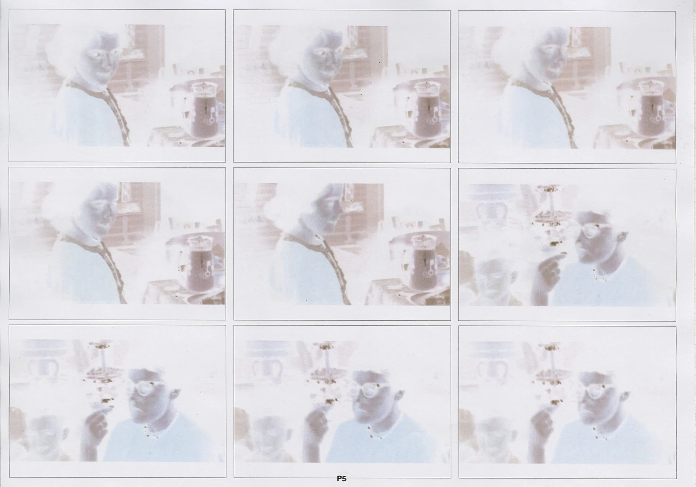
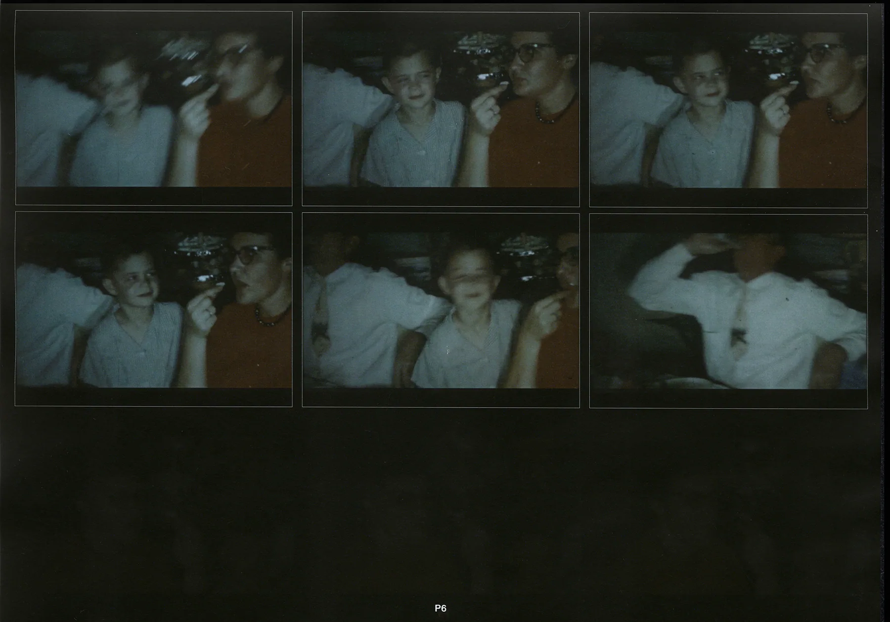
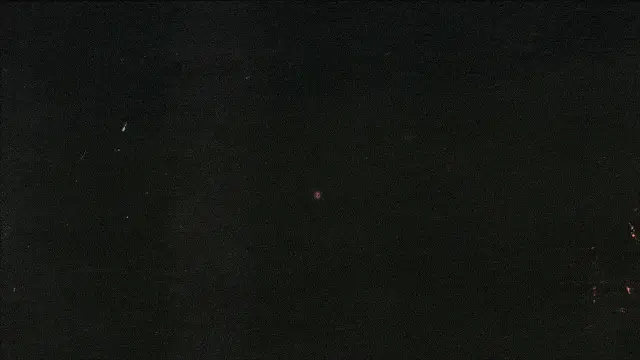
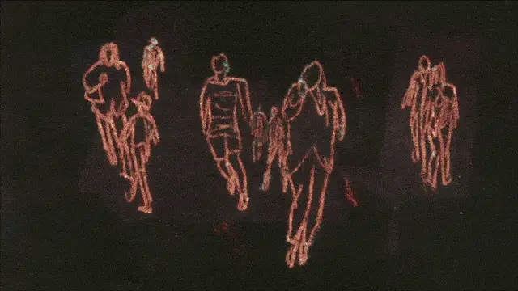
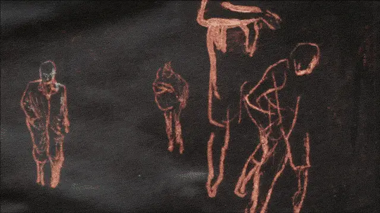

Our existence is just a surge of fluctuation pulsing through the timeline. The perspective of being alive only exists in the present. Though innate to our life, the past and the future is always absent, which easily narrows our understanding of the world to a thin slice.
In my graduation project I love you forever now, I want to portray our shared mortality by looking into the idea of our past and future self, to examine our understanding of the concept 'myself', question its stability and spot our unawareness towards not just ourselves, but also other people's connected and fluid identity, who all experience the same mortal life as vivid and as complex as 'me'.

The final film were scans of printed paper negative, most of the clips were found old home videos, which showed us a glimpse of their time with both familiarity and distance.


clips of monoprint animation

